Лабораторная работа 1. Работа с сокетами
Студент: Ипатова Ульяна
Группа: К3339
Дисциплина: Веб-программирование
Цель работы
Реализовать клиентские и серверные программы на Python с использованием библиотеки socket: обмен сообщениями по UDP, вычисления по TCP, передачу HTML-страницы, чат и обработку GET/POST-запросов.
Задание 1. Обмен сообщениями по UDP
Файлы: task_1_udp/server_UDP.py, task_1_udp/client_UDP.py.
Клиент создаёт UDP-сокет и отправляет серверу строку Hello server! с помощью sendto(). Сервер принимает её через recvfrom(), выводит на экран и отправляет ответ Hello client!. Клиент получает и выводит ответ. В программе используется адрес localhost и порт 8080.
Фрагмент из сервера:
server_socket = socket.socket(socket.AF_INET, socket.SOCK_DGRAM)
server_socket.bind(('localhost', 8080))
data, client_address = server_socket.recvfrom(1024)
request = data.decode()
print(request)
server_socket.sendto("Hello client!".encode(), client_address)
Запуск: в папке task_1_udp сначала выполнить python server_UDP.py, затем в другом терминале python client_UDP.py.
Ожидаемый результат: сервер выводит Hello server!, клиент выводит Hello client!.
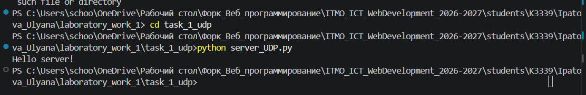
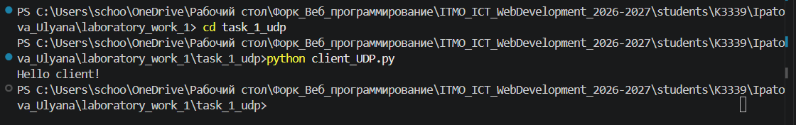
Задание 2. Вычисления через TCP
Файлы: task_2_tcp/server_TCP.py, task_2_tcp/client_TCP.py.
Вариант 2: решение квадратного уравнения ax² + bx + c = 0. Клиент устанавливает TCP-соединение через connect(), предлагает ввести три коэффициента через пробел и передаёт введённую строку серверу. Сервер получает её методом recv(), разделяет на три значения и вычисляет дискриминант D = b² - 4ac.
При a = 0 сервер отправляет сообщение Это не квадратное уравнение. При положительном дискриминанте вычисляет два корня, при нулевом - один; при отрицательном отправляет Нет корней!. Ответ приходит клиенту и выводится в терминале.
Фрагмент из сервера:
a, b, c = parameters.split()
if float(a) == 0:
client_connection.sendall("Это не квадратное уравнение".encode())
client_connection.close()
continue
discriminant = float(b)**2 - 4 * float(a) * float(c)
Запуск: в папке task_2_tcp сначала выполнить python server_TCP.py, затем в другом терминале python client_TCP.py. Для проверки можно ввести 1 -3 2 (корни 2 и 1), 1 2 1 (корень -1), 1 0 1 (сообщение об отсутствии корней).
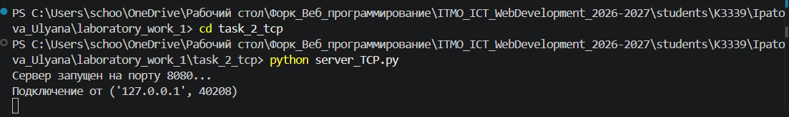
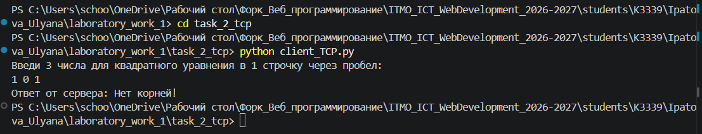
Задание 3. Раздача HTML-страницы по HTTP
Файлы: task_3_http/server_HTTP.py, task_3_http/index.html.
Сервер создаёт TCP-сокет, принимает подключение браузера, читает HTML-страницу из файла index.html и отправляет HTTP-ответ. В ответе указаны статус 200 OK, тип содержимого text/html, длина HTML в байтах (Content-Length) и заголовок Connection: close. Затем передаётся содержимое файла.
Фрагмент из сервера:
with open("index.html", "r", encoding="utf-8") as file:
html = file.read()
html_response = html.encode()
http_headers = (
"HTTP/1.1 200 OK\r\n"
"Content-Type: text/html; charset=UTF-8\r\n"
f"Content-Length: {len(html_response)}\r\n"
"Connection: close\r\n"
"\r\n"
).encode()
Запуск: открыть терминал в папке task_3_http, выполнить python server_HTTP.py, затем перейти в браузере по адресу http://localhost:8080/. Файл index.html должен находиться в этой же папке.
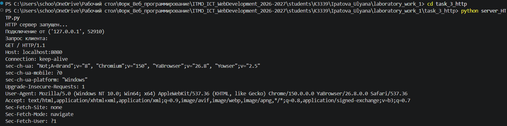
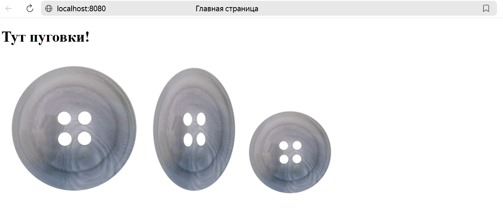
Задание 4. Чат на сокетах
Файлы: task_4_chat/server_chat.py, task_4_chat/client_chat.py.
Чат работает по TCP. При запуске клиент запрашивает имя пользователя и передаёт его серверу. Сервер хранит подключённых пользователей в словаре clients: ключ - сокет, значение - имя. Для каждого клиента сервер создаёт отдельный поток с помощью threading.Thread(). Полученные сообщения сервер пересылает остальным участникам через broadcast().
На клиенте отдельный поток принимает сообщения, а основной поток считывает ввод с клавиатуры. Для выхода используется команда /покинуть группу/.
Фрагмент из сервера:
clients = {}
while True:
client_socket, client_address = server_socket.accept()
thread = threading.Thread(
target=handle_client,
args=(client_socket, client_address)
)
thread.start()
Запуск: в папке task_4_chat выполнить python server_chat.py. Затем в двух или трёх других терминалах выполнить одну и ту же команду python client_chat.py. В каждом клиенте ввести своё имя, отправить сообщения и проверить выход командой /покинуть группу/.
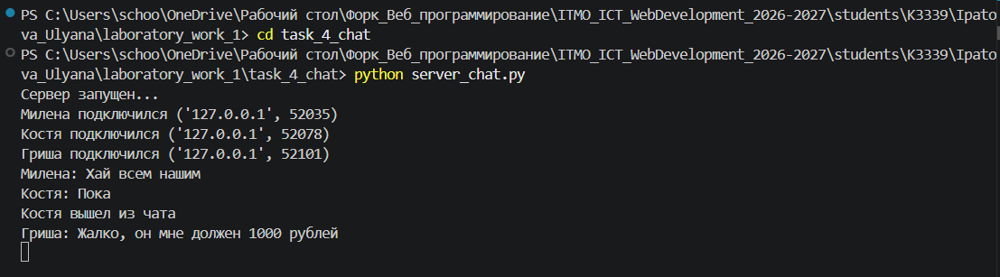
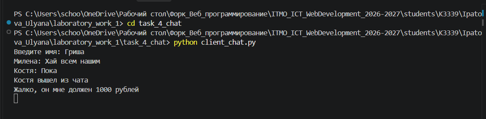
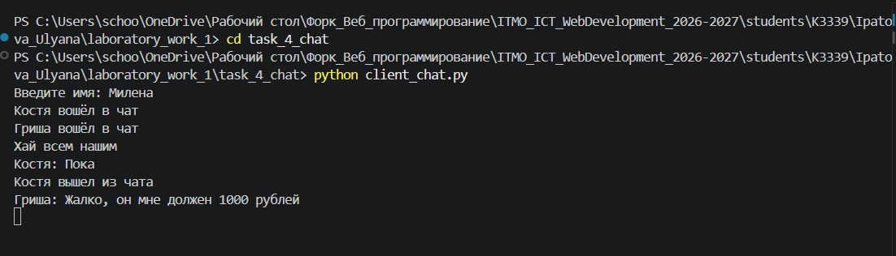
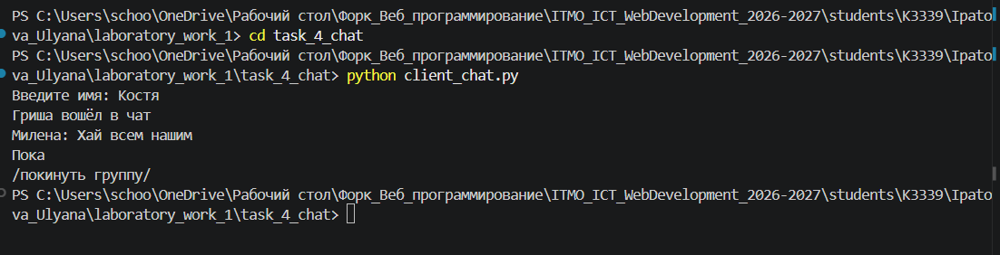
Задание 5. Простой веб-сервер GET/POST
Файл: task_5_web/server_WEB.py.
Сервер принимает HTTP-запросы через TCP-сокет. Функция receive_request() считывает заголовки и тело запроса, parse_request() определяет метод и путь. При GET / формируется страница с журналом оценок и формой. При POST /grade сервер получает название дисциплины и оценку из формы, после чего снова выводит страницу.
Оценки хранятся в словаре grades: названием дисциплины служит ключ, а значением - список её оценок. Поэтому при добавлении двух оценок по одному предмету создаётся одна запись с двумя оценками, а не две отдельные записи.
Фрагмент из сервера:
grades = {}
if subject not in grades:
grades[subject] = []
grades[subject].append(grade)
| Метод | Путь | Действие |
|---|---|---|
| GET | / |
Показать журнал и форму добавления оценки |
| POST | /grade |
Принять данные формы и добавить оценку |
Форма содержит поле дисциплины и поле оценки от 2 до 5. В коде сервера есть проверка пустого названия, проверка subject.isdigit() и проверка диапазона оценки. Функция add_grade() возвращает текст ошибки при неверных данных, но текущая функция handle_client() этот текст не показывает на HTML-странице.
Запуск: в папке task_5_web выполнить python server_WEB.py, затем открыть http://localhost:8080/ и добавить несколько оценок. Например, после добавления оценок 5 и 4 по математике в журнале должна отображаться запись Математика: [5, 4]. Данные находятся в памяти и пропадают после перезапуска сервера.
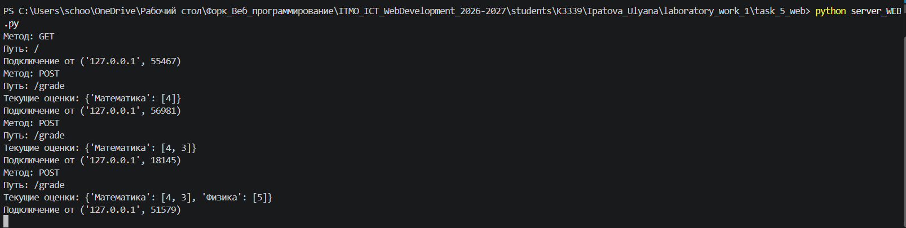
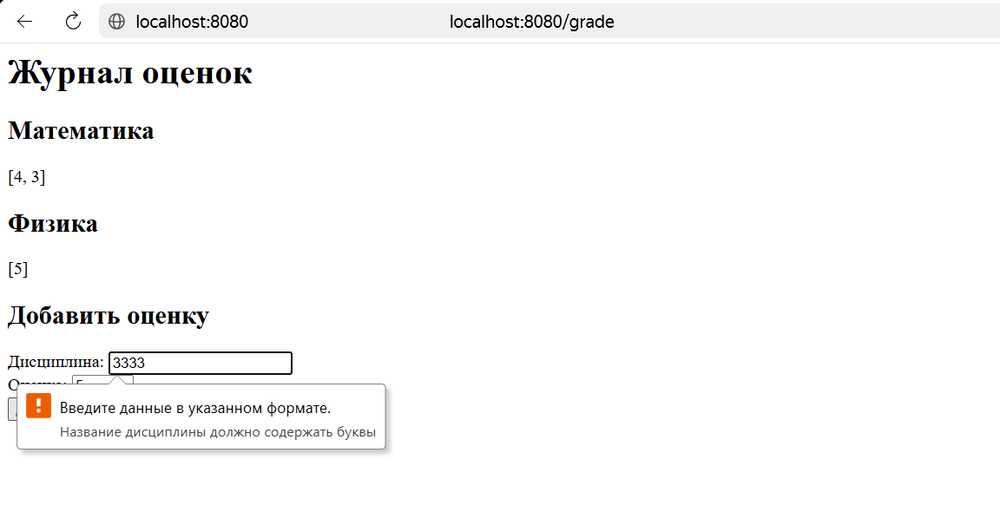
Вывод
В ходе работы написаны пять программ с использованием сокетов. В первых трёх заданиях реализованы обмен сообщениями и передача HTML-страницы, в четвёртом - многопользовательский чат с потоками, в пятом - простой HTTP-сервер с журналом оценок.